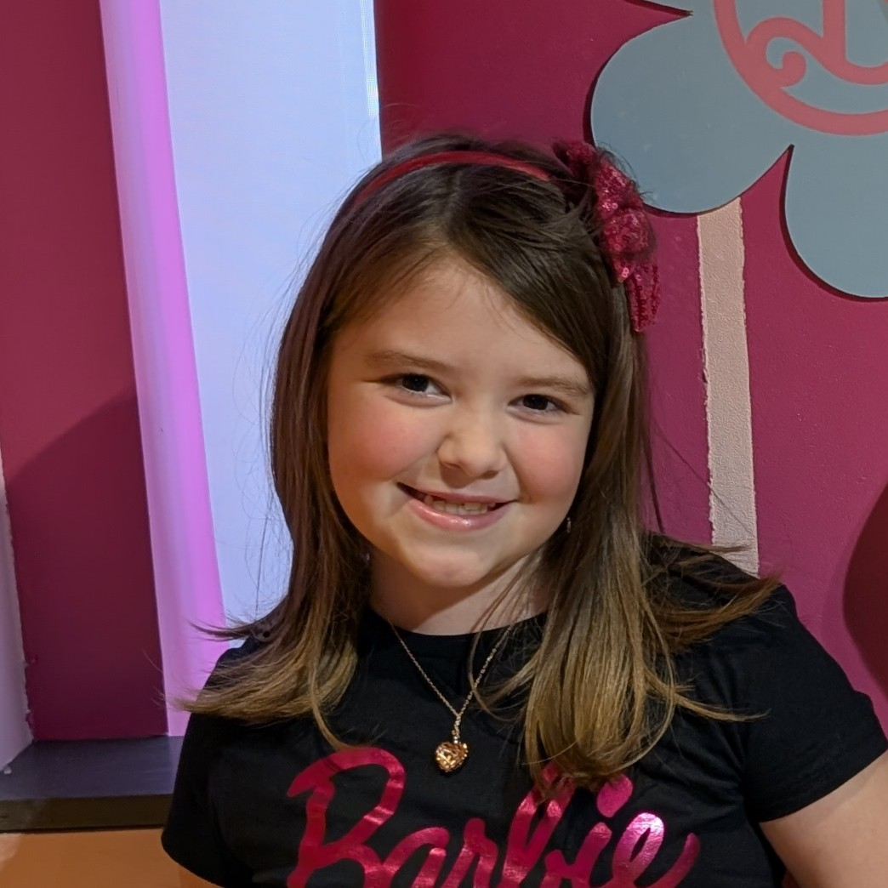

Meet IAmChrisJalbert
I am Christopher Jalbert, an Android Developer based in Gloucester, Massachusetts. By day, I navigate the logistical complexities of global freight forwarding. By night, I translate that need for efficiency into native mobile applications built with Kotlin and Jetpack Compose.
I launched the Simply Collection™ as a direct response to "app-bloat." In an era of intrusive tracking and heavy data hoarding, I believe software should be a lightweight tool that respects your privacy, your battery life, and your time.
My philosophy is Local-First. Whether it's a finance tracker like Simply Sip™ or a utility for the family, your data stays where it belongs: on your device. No cloud accounts, no shadow-tracking, no noise.
When I'm not in Android Studio, I'm a family man. I live on the North Shore with my wife, Amber ("Pizza"), and my two daughters, Ace (Lorelai) and Emersyn. I find my inspiration in things that are practical, permanent, and fast—much like a good line of code or a Foo Fighters riff.
The Team Behind the Code
While I handle the programming, compiler errors, and late-night logic sessions, the Simply Collection™ wouldn't exist without my household masterminds. Meet the ultimate calibration and support crew.
Amber
The AnchorThe ultimate sounding board for app design logic and the foundation of the studio. She provides the critical, objective perspective needed to ensure our utilities stay clean, focused, and tailored to real-world utility.
Lorelai
Lead Beta TesterKeeping user interface layouts completely honest. With absolute zero tolerance for sluggish mechanics, confusing menus, or flawed design elements, she serves as the perfect high-stakes checkpoint for responsiveness.

Emersyn
Quality AssuranceThe true calibration engine for intuitive design. If a game dynamic or interactive element isn't instantly clear, rewarding, and easy to navigate from the very first tap, she calls it out immediately.